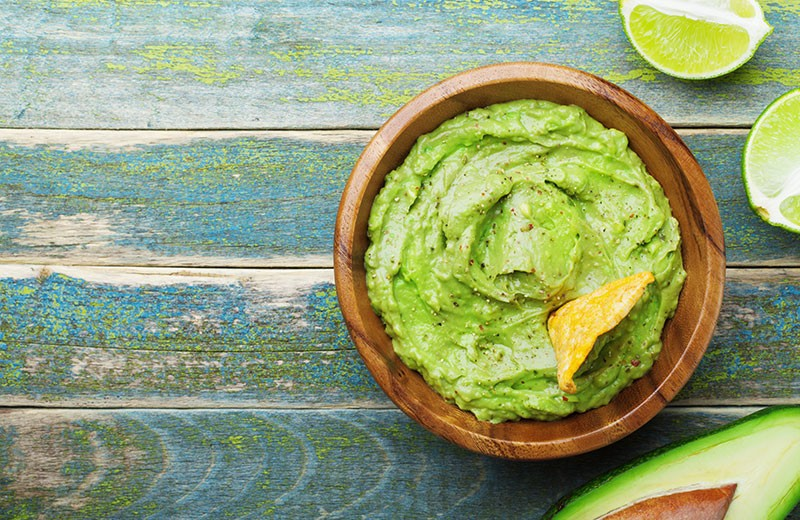

Recettes du Mexique
Découvrez les délices de la cuisine méxicaine avec nos recettes traditionnelles et modernes.
Tacos Al Pastor

Description : Les tacos Al Pastor sont des tacos mexicains populaires, garnis de viande de porc marinée, cuite lentement, et servis avec de l'ananas, de la coriandre, et des oignons. Un classique des rues du Mexique.
Ingrédients :
- 500 g de porc (épaule ou longe), tranché finement
- 3 piments guajillo (trempés et mixés)
- 1 oignon
- 1 ananas en tranches
- 4 gousses d'ail
- 50 ml de vinaigre de cidre
- 2 c. à soupe de sauce achiote
- Coriandre fraîche, tortillas
- Sel et poivre
Instructions :
- Mariner la viande : Mélanger les piments, l'ail, l'oignon, le vinaigre et l'achiote. Enrober les tranches de porc de cette marinade et laisser reposer 4 heures.
- Cuisson : Griller la viande et l'ananas jusqu'à ce qu’ils soient dorés. Découper en morceaux.
- Assembler les tacos : Disposer la viande et l'ananas sur les tortillas, puis ajouter de la coriandre et de l'oignon.
- Servir : Déguster chaud avec du citron vert.
Guacamole

Description : Le guacamole est une préparation d’avocats écrasés, mélangée avec de l'oignon, de la tomate, de la coriandre et du citron vert. C'est une sauce d'accompagnement incontournable au Mexique.
Ingrédients :
- 3 avocats mûrs
- 1 tomate, épépinée et hachée
- 1/2 oignon, finement haché
- 1 citron vert (jus)
- Coriandre fraîche
- Sel
- Piment jalapeño, facultatif
Instructions :
- Préparer les avocats : Écraser les avocats dans un bol avec une fourchette jusqu'à obtenir une texture lisse.
- Ajouter les ingrédients : Incorporer la tomate, l'oignon, la coriandre et le jus de citron. Assaisonner avec du sel et, si désiré, du jalapeño.
- Servir : Accompagner de chips de maïs ou comme garniture dans les tacos.
Enchiladas Rojas

Description : Les enchiladas rojas sont des tortillas garnies de poulet et nappées de sauce rouge à base de piments, puis garnies de fromage, de crème et de coriandre. Un délice épicé et réconfortant.
Ingrédients :
- 6 tortillas de maïs
- 300 g de poulet cuit, effiloché
- 3 piments guajillo
- 1 oignon, haché
- Fromage frais râpé
- Crème mexicaine
- Coriandre fraîche
- Sel et poivre
Instructions :
- Préparer la sauce : Mixer les piments réhydratés, l'oignon et un peu d'eau pour obtenir une sauce.
- Garnir les tortillas : Tremper les tortillas dans la sauce, les garnir de poulet et les rouler.
- Servir : Garnir de fromage, de crème et de coriandre avant de servir.
Chiles Rellenos

Description : Les *chiles rellenos* sont des piments poblano farcis de fromage ou de viande, panés et frits, puis servis avec une sauce tomate. Un plat épicé et savoureux.
Ingrédients :
- 4 piments poblanos
- 200 g de fromage râpé (ou viande hachée)
- 3 œufs (pour la panure)
- 1 tasse de farine
- 1 tasse de sauce tomate
- Huile pour friture
- Sel et poivre
Instructions :
- Préparer les piments : Griller les piments jusqu’à ce que la peau soit noircie, puis les peler et retirer les graines.
- Farcir : Remplir chaque piment de fromage ou de viande hachée.
- Paner et frire : Tremper les piments farcis dans la farine, puis dans les œufs battus, et les frire jusqu’à ce qu’ils soient dorés.
- Servir : Napper de sauce tomate et déguster chaud.